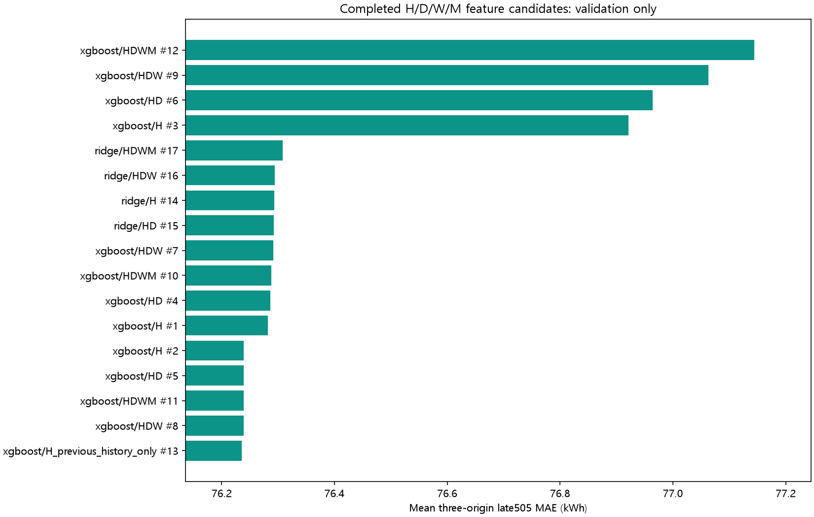
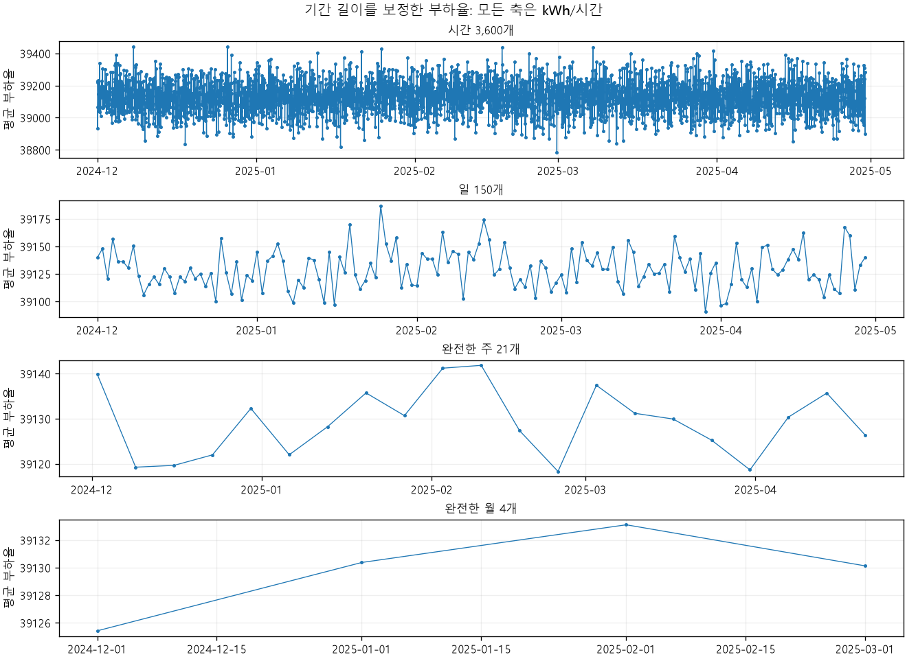
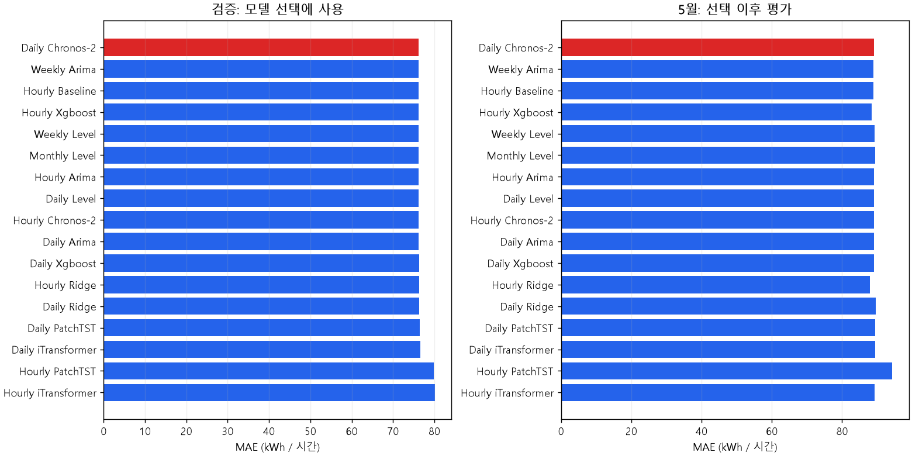

시간·일·주·월 리샘플링 기반 미래 전력량 예측
프로젝트 가이드의 미래 전력량·요금·탄소 예측을 유지하여 137개 설정을 검증하고, 선택된 17개 모델을 같은 5월 505시간에서 평가했습니다.
검증 기준 선택: Daily Chronos-2일별 Chronos-2 예측과 과거 평균의 혼합(Chronos 25%, 평균 75%)입니다. 3개 원점 검증 MAE 76.22744 kWh, 시간 평균 기준선 대비 개선 0.00720 kWh에 그칩니다. 검증상 최저 오차이며, 확실한 성능 우위를 입증한 결과는 아닙니다.
선택 모델의 5월 MAE 89.0312 kWh, R² -0.38988. 5월에서 관측된 최저 MAE는 Hourly Ridge의 87.9344 kWh였지만 이 결과로 모델을 다시 선택하지 않았습니다.
결론: 리샘플링으로 유의미한 시간별 변동 예측 개선을 확인하지 못했습니다.시간별 부하를 평균 수준으로 추정하는 능력과 실제 시간별 변동을 예측하는 능력은 다릅니다. 작은 MAPE를 정확도 99%라는 식으로 해석할 수 없습니다. 현재 자료에서는 단순 기준선을 함께 유지하는 것이 합리적이며, 높은 용량 모델 또는 월별 학습 모델의 신뢰성을 주장할 근거가 부족합니다.
1. 데이터와 전처리
| 단위 | 전체 버킷 | 완료된 학습 버킷 | 첫 검증 원점의 학습 버킷 | 산출 데이터 |
|---|
| 시간 H | 3,600 | 3,600 | 1,824 | 시간 CSV |
| 일 D | 150 | 150 | 76 | 일 CSV |
| 주 W-SUN | 23 | 21 | 10 | 주 CSV |
| 월 MS | 5 | 4 | 2 | 월 CSV |
원본 5초 간격 전력(kW)을 전력량 = Σ P × 5/3600으로 적분하고 13개 모듈을 합쳤습니다. 완전히 관측한 시간만 사용하며, 학습 범위는 2024-12-01 00:00부터 2025-04-29 23:00까지입니다. 4월 30일 00:00의 단일 원본 시점은 완료된 1시간으로 취급하지 않습니다.
일·주·월의 전력량 합계와 함께 관측 시간 수, 기대 시간 수, coverage, complete, available_at을 저장했습니다. 학습 목표는 기간 평균 부하율(kWh/시간)로 만들어 월 길이 차이를 보정했습니다. 완전하지 않은 주 2개와 4월 29일까지만 있는 4월 월간 버킷은 주·월 모델 학습에서 제외했습니다. 주는 월요일 00:00에, 월은 다음 달 1일 00:00에 이용할 수 있습니다.
시간 단위 XGBoost·Ridge 입력은 과거 부하의 lag1/24/168, 이동 평균·표준편차, 예측 거리와 달력입니다. 완료된 과거 일·주·월 요약을 추가하는 H→HD→HDW→HDWM 비교도 수행했습니다. 검증에서 XGBoost는 과거 시간 이력만 사용하는 설정이, Ridge는 HD가 선택되었습니다. 미래 센서 실제값 또는 미래 집계 총량은 입력하지 않았습니다. Ridge와 신경망의 scaler, 과거 시간 배분 패턴은 각 학습 구간 안에서 계산했습니다. 전체 피처 조합 비교표


집계에 따라 흔들림이 작아져도 예측 정보가 새로 생기는 것은 아닙니다. 월 데이터 4개는 고용량 모델 학습에 부족합니다. 원본 단위와 13개 계측기의 포함 관계가 미확인되어 가이드 정의에 따른 잠정 전력량을 사용했습니다.
2. 예측 범위와 공정한 평가
최종 입력은 2025-04-29 23:00의 완료된 시간까지입니다. 4월 30일 00:00부터 5월 31일 00:00까지 745시간을 고정 원점에서 예측했습니다. 가이드의 정답 데이터는 5월 10일 00:00부터 시작하므로, 마지막 관측 시간 기준 241~745시간 뒤의 505개 값을 평가했습니다. 해당 시각은 1시간 버킷의 시작 시각입니다. 예측 중 5월의 실제 전력량이나 센서로 갱신하지 않았습니다.
모델 선택은 2월 15·22·25일의 3개 원점에서 각각 745시간을 예측하고 마지막 505시간의 MAE를 평균한 기준입니다. 선택 이후 별도로 3월 29일 원점의 마지막 505시간(4월 8일~29일 00:00)을 평가했습니다. 검증의 최종 라벨은 3월 28일 00:00이며 내부 평가와 겹치지 않습니다. 단, 검증 원점끼리 중복된 라벨이 있어 1,515개 평가 쌍의 고유 시각은 745개입니다. 3개의 독립 실험이라는 주장은 하지 않습니다.
일별 모델은 32일 부하율을 예측하고 과거 배분 패턴으로 시간값으로 변환했습니다. 주·월 모델도 각 달력 기간의 부하율을 시간값으로 배분합니다. 검증 결과 배분 패턴은 균등 배분이 선택되었습니다. 각 모델은 자기 예측 기간 평균을 사용하며 실제 미래 총합에 맞추지 않았습니다. H/D/W/M 간 계층 합계 일치 제약을 공동 학습한 모델은 아닙니다.
이번 실험의 모델 선택과 학습에서는 5월 라벨을 사용하지 않았습니다. 다만 이전 분석에서 4·5월 자료를 살펴본 이력이 있어 완전히 새로운 맹검 실험으로 해석할 수 없습니다. 주·월 모델은 표본 부족에 맞춘 ARIMA 또는 수준 기준선입니다.
3. 동일한 505시간에서의 모델별 결과
MAE의 단위는 모두 시간 전력량 kWh이며 기간이 다른 오차를 직접 섞지 않았습니다. 내부·5월 결과는 설정 선택에 사용하지 않았습니다.
| 모델 | 검증 MAE | 내부 MAE | 5월 MAE | 5월 R² | 5월 편향 | 자료 |
|---|
| Daily Chronos-2 검증 선택 | 76.22744 | 77.98528 | 89.03118 | -0.389883 | 57.978 | CSV · 설정 |
| Weekly Arima | 76.23157 | 77.99946 | 88.97262 | -0.388287 | 57.874 | CSV · 설정 |
| Hourly Baseline | 76.23464 | 77.94936 | 88.92619 | -0.387004 | 57.777 | CSV · 설정 |
| Hourly Xgboost | 76.23594 | 78.00689 | 88.41735 | -0.372873 | 56.713 | CSV · 설정 |
| Weekly Level | 76.23633 | 77.98905 | 89.30397 | -0.397468 | 58.553 | CSV · 설정 |
| Monthly Level | 76.23641 | 77.93539 | 89.40033 | -0.400147 | 58.750 | CSV · 설정 |
| Hourly Arima | 76.23714 | 77.99725 | 89.03149 | -0.389918 | 57.994 | CSV · 설정 |
| Daily Level | 76.23714 | 77.99725 | 89.03149 | -0.389918 | 57.994 | CSV · 설정 |
| Hourly Chronos-2 | 76.23714 | 77.99725 | 89.03149 | -0.389918 | 57.994 | CSV · 설정 |
| Daily Arima | 76.23714 | 77.99725 | 89.03149 | -0.389918 | 57.994 | CSV · 설정 |
| Daily Xgboost | 76.28529 | 77.97936 | 89.11377 | -0.392257 | 58.165 | CSV · 설정 |
| Hourly Ridge | 76.29281 | 78.05607 | 87.93437 | -0.360894 | 55.746 | CSV · 설정 |
| Daily Ridge | 76.30013 | 77.94962 | 89.64563 | -0.407009 | 59.252 | CSV · 설정 |
| Daily PatchTST | 76.40505 | 77.94598 | 89.40467 | -0.403510 | 57.937 | CSV · 설정 |
| Daily iTransformer | 76.57296 | 77.85725 | 89.33233 | -0.402782 | 58.341 | CSV · 설정 |
| Hourly PatchTST | 79.90465 | 82.23088 | 94.27650 | -0.563796 | 55.321 | CSV · 설정 |
| Hourly iTransformer | 80.12557 | 80.27523 | 89.28571 | -0.397904 | 57.692 | CSV · 설정 |

5월 평균 실제값은 39071.384 kWh이며 전체 학습 평균 39129.378 kWh보다 낮습니다. 현재 고정 원점 모델은 이 수준 차이를 잘 반영하지 못했습니다. R²가 음수인 결과는 5월 실제 평균을 사용하는 사후 상수 예측보다 제곱오차가 컸다는 뜻입니다. 해당 실제 평균은 예측 당시 사용할 수 없으므로 서비스 기준선으로 입력하지 않았습니다.
잠금된 선택 모델과 시간 기준선의 5월 MAE 차이(모델 - 기준선)는 0.1050 kWh입니다. 24시간 블록을 이용한 기술적 bootstrap 95% 구간은 [0.0196, 0.1941] kWh입니다. 이는 이 평가 구간의 불확실성 참고치이며 미래 데이터의 우위나 전역 최적성을 입증하지 않습니다.
원래 기간 단위의 합계 평가도 별도 CSV에 저장했습니다. 5월 정답으로 완전한 일은 21개, 주는 2개이며 완전한 월은 없습니다. 따라서 월 총량의 정확도 또는 월별 모델 신뢰도를 이번 5월 자료로 검증했다고 주장할 수 없습니다.
4. 모델별 실제값·예측값과 오차
아래 메뉴로 17개 모델의 실제값, 예측값, 시작 72시간 확대, 잔차를 확인할 수 있습니다. 검증 그림은 마지막 원점(2월 25일)이며 표의 검증 점수는 3개 원점 전체입니다.

5. 연구 모델·학습 한계
PatchTST와 iTransformer의 공개 모델 코어를 사용해 H/D 모델을 학습했습니다. 유사한 산업 계측 공개 데이터인 HIPE를 참조했지만 동일 데이터셋의 절대 SOTA를 재현한 것은 아닙니다. 일별 신경망의 첫 내부 학습은 44일뿐이며 context7+예측32로 만들 수 있는 중복 학습 창은 6개입니다. 일부 iTransformer 후보는 epoch24 상한에서 최저 손실이 나와 미수렴 가능성이 있습니다.
Chronos-2 공식 고정 체크포인트는 가중치 미세조정 없이 문맥 길이·평균 혼합 비율만 검증으로 선택했습니다. 시간 Chronos는 혼합 alpha0으로 단순 평균과 동일한 결과입니다. 일별 Chronos alpha0.25도 확실한 우위를 보이지 않았습니다. ARIMA와 XGBoost를 함께 학습했으며 제한된 후보 범위의 최저 점수만 보고했습니다.
6. 결과와 재현 파일
선택 모델: 가이드 505시간 전력량·요금·탄소 CSV · 선택 모델 전체 745시간 예측 · 모델 비교표 · 전체 모델 실제값·예측값 · 5월 평가 전 선택 잠금 · 통합 검증 · 독립 감사 · 재현 명령
요금은 예측 전력량×180원/kWh, 탄소는 ×0.424kgCO₂/kWh인 가이드 가정입니다. 별도 예측 모델의 검증 점수로 계산하지 않았습니다. 제출 CSV agg_pow는 제공 정답 형식에 맞춘 505시간 합계이며 완전한 5월 총량을 의미하지 않습니다. 원본과 기존 분석 결과는 보존했습니다.